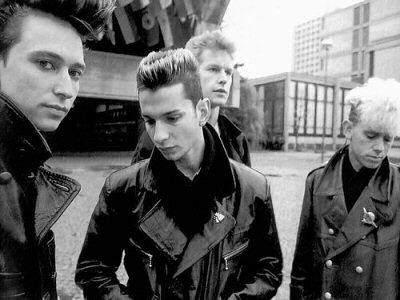

Del originario pop electrónico minimalista y bailable de raíces Kraftwerk de Vince Clarke al tecno pop de atmósferas góticas de Martin Gore, las composiciones de Depeche Mode siempre se han significado por ofrecer algunas de las propuestas más interesantes y sugestivas de los sonidos electrónicos surgidos en el Reino Unido a comienzos de los años 80.
La historia del grupo se remonta a mediados de la década de los 70, cuando en el año 1976 dos muchachos de la localidad inglesa de Basildon formaron un dúo llamado No Romance in China en el que ambos tocaban la guitarra.
Sus nombres eran Vince Clarke (nacido el 3 de julio de 1960) y Andrew Fletcher (nacido el 8 de julio de 1961).
Tras la ruptura del dúo, Vince conoció a Martin Lee Gore (nacido el 23 de julio de 1961), guitarrista del conjunto Norman And The Worms en el que Gore compartía escenario con Philip Burdett.
En el año 1979 crearon The French Look, la primera formación en la que comenzaron a utilizar sintetizadores.
Vince llamó a su amigo Andrew y se rebautizaron como Composition Of Sound.

En ese momento, y con el dominio en la composición de Clarke, Composition Of Sound amalgamaron en su música influencias de:
Kraftwerk
David Bowie
Human
League
Roxy Music…
Para crear un rítmico pop electrónico de pegadizas melodías con Vince, a su pesar, como vocalista principal.
Un año después, y debido a su fobia a cantar, Vince Clarke propuso que el grupo incorporara a un nuevo cantante.
En el año 1980, Composition of Sound añadió a la banda a David Gahan (nacido el 9 de mayo de 1962) y poco después cambiaron su nombre al de Depeche Mode, derivado de una revista de modas francesa.
El grupo obtuvo un importante seguimiento en los clubes londinenses y grabó el single “Photographic”, que fue editado en una pequeña compañía independiente llamada Some Bizarre.
Poco después llamaron la atención de David Miller, el propietario del sello Mute Records y editaron su primer sencillo con Miller, “Dreaming Of Me”.
Esta canción alcanzó el número 1 en las listas independientes de Gran Bretaña a comienzos del año 1981 y
sacó del anonimato a la banda.
El mismo año publicaron su primer LP, “Speak and Spell”
(1981)
Con Vince Clarke como alma del grupo, este subestimado disco, con un sonido muy alejado de sus posteriores trabajos, está plagado de contagiosas, inocentes, dinámicas, bailables, alegres piezas de pop de sintetizadores con brillantes melodías de espíritu naif.
El segundo single del álbum fue “New Life”, uno de los mejores cortes del álbum que fue continuado por “Just Can’t Get Enough”, la canción que les convirtió en estrellas a ambos lados del Atlántico.
El LP también contenía dos de las primeras composiciones escritas por Martin Gore, “Tora! Tora! Tora!” y
la instrumental “Big Muff”, cortes inferiores a las diez canciones de Clarke.

Este sonido pegadizo, colorista,
optimista de Vince cesó cuando el compositor decidió abandonar el grupo tras “Speak And Spell” para
formar primero Yazoo junto a Alison Moyet y después Erasure con Andy Bell.
La prensa británica, y los propios fans de Depeche Mode, prácticamente daban por finiquitado el conjunto con la marcha de su líder.
Se equivocaron.
Fue en ese momento cuando Martin Gore cogió las riendas de la composición y los temas de la banda comenzaron a oscurecerse, sus propuestas líricas eran más amargas y las atmósferas más sombrías.
A pesar de la tendencia oscura de Gore éste todavía está influenciado por la escritura de Clarke, apreciable en todo el siguiente álbum y en “See You”, el primer single de su nuevo disco, “A Broken Fame” (1982).
“A Broken Fame” fue un estupendo segundo disco con canciones como:
“Leave In Silence”
“The Meaning Of Love”
“The Sun And The Rainfall”
“A Photograph Of You”
El instrumental “Nothing To Fear”
O la citada “See You”
Varios temas de este disco fueron recuperados de composiciones antiguas que Gore había escrito en sus años de adolescente.
Para las actuaciones en directo, Depeche Mode requirieron la presencia de un experto en sintetizadores incluyendo en el Melody Maker un anuncio.
El elegido fue Alan Wilder (nacido el 1 de junio de 1959), quien en principio solamente acompañaba al
grupo de gira hasta su inclusión como miembro oficial en su tercer LP, “Construction Time
Again” (1983), disco con unas letras más comprometidas aunque sin la vivacidad pop
de sus inicios, siendo el tema más importante de este irregular álbum el clásico “Everything Counts”,
canción en la que Gore ataca la codicia del exceso afán capitalista.
Mucho mejor fue “Some Great Reward”
(1984), magistral LP grabado en la ciudad alemana de Berlín y publicado tras el
single “Get The Balance Right”.
Con un sonido industrial, el disco está significado por grandes composiciones y espinosas letras, con materias como el sadomasoquismo en “Master And Servant”, el suicidio y un miramiento irónico a la religión en “Blasphemour Rumours” o la igualdad racial y cultural en “People Are People”.
También Gore tuvo tiempo para escribir una de las mejores baladas románticas en la historia del grupo, “Somebody”, con base de piano e interpretación vocal del propio Martin.

“Black Celebration”
(1986), publicado tras un recopilatorio de singles, subrayó su enfoque gótico,
reflexivo, taciturno, y volvió a alimentar el catálogo de clásicos de la banda con:
“A Question Of Time”
“A Question Of Lust”
“Stripped”
O el título homónimo “Black Celebration”
El excelente disco “Music For The Masses” (1987), producido por primera vez por David Bascombe, reforzó su posicionamiento comercial y con tres memorables singles:
“Never Let Me Down Again”
“Behind
The Wheel”
Con
este último álbum Depeche Mode se convirtieron en ídolos de la radiofórmula.
Este triunfo fue corroborado con el éxito del directo “101” (1989), doble álbum grabado en el Pasadena Rose Bowl que fue acompañado por un video dirigido por D. A. Pennebaker, conocido por su colaboración con Bob Dylan.
Ese mismo año, Martin Gore publicó su primer disco en solitario, el EP de versiones “Counterfeit” (1989).
Depeche Mode volvieron a las tiendas de discos con “Violator” (1990), uno de sus mejores LPs en el que incorporaron elementos rock.
“Enjoy
The Silence”
“Policy Of True”
“World In My Eyes”…
Son algunos de los temás más importantes de un álbum co-producido por Flood, quien previamente había
trabajado con U2, Erasure

Flood y un sonido más agresivo continuaron en
“Songs Of Faith And Devotion” (1993), ecléctico disco tecno rock con cambio de imagen para David Gahan,
quien se convierte en un adicto a la heroína y a lucir melena influenciado por el contexto grunge de su
nueva residencia americana.
Entre sus temas destacan:
I Feel You”
“Walking In My Shoes”
“Condemnation”
“In My Room”
Con ese disco, Depeche Mode alcanzó los puestos más altos en las principales listas mundiales a pesar de ser recibido por sus seguidores con cierto desencanto.
A partir de mediados de la década de los 90 el grupo comenzó a dispersarse.
David Gahan continuó enganchado a la heroína e intentó suicidarse tras ser abandonado por su esposa.
Martin Gore se marchó a los Estados Unidos con su mujer Suzanne Boisvert, con la que contrajo matrimonio en 1994.
Alan Wilder no se mostraba contento con el nuevo sonido y abandonó el grupo para proseguir con su proyecto electrónico Recoil, proyecto que había iniciado a finales de los años 80.
En el año 1996, con David Gahan rehabilitado de sus problemas con las drogas, Depeche Mode, ahora convertidos en trío, comienzan a grabar en Nueva York su nuevo disco, “Ultra” (1997), un trabajo menor producido por Tim Simenon que contiene temas como:
“Barrel Of A Gun”
“It’s No Good”
“Home”
Tras unos años de ausencia en el panorama discográfico, el grupo británico retornó con “Exciter” (2001),
un LP recibido con disparidad de opiniones en el que contaron con la colaboración del productor Mark
Bell, conocido por sus discos con la cantante islandesa Björk.

En el año 2003, Martin Gore publicó el
LP “Counterfeit 2” (2003), una nueva recopilación de versiones con adaptaciones de gente como:
John Lennon
Lou Reed
Julee
Cruise
Nick Cave
Brian
Eno
Iggy Pop…
David Gahan también grabó en solitario su debut “Paper Monsters” (2003), en donde el cantante formaba equipo compositivo con Knox Chandler.
Dos años después Depeche Mode editaron “Playing the Angel” (2005), álbum producido por Ben Hillier, quien previamente había colaborado con Blur, U2, Echobelly o Duran Duran.
En el año 2007, Gahan volvió a publicar un disco como solista con “Hourglass” (2007).
Más tarde colaboró con los Soulsavers para grabar “Angels & Ghosts” (2015).
“Sounds Of The Universe” (2009), disco presentado con el single “Wrong”, y “Delta Machine” (2013), son sus últimos álbums.
Martin Gore publicó como solista el disco instrumental electrónico “MG” (2015).
Dos años después apareció un nuevo disco de Depeche Mode titulado “Spirit” (2017), con singles como “Where’s The Revolution” o “Going Backwards”.
En el año 2017 también sonó su canción “Everything Counts” en el recopilatorio “Just Say 50: Sire Records 50Th Aniversary Box”.
Previamente, en el 2016, se editó el DVD “Video Singles Collection”.
En el año 2018 sonó su canción “It’s No Good” en la película “Aquaman”
(2018).
El mismo año se escuchó “New Life” en la banda sonora del film “Black Mirror”
(2018).
En el año 2020 ingresaron en el Rock And Roll Hall Of Fame.
En el 2021, Martin Gore editó el EP “The Third Chimpanzee” (2021).
El mismo año, Dave Gahan volvió a aliarse con los Soulsavers para grabar “Imposter” (2021), un álbum de versiones.
Andrew Fletcher falleció el 26 de mayo del año 2022 tras sufrir una disección aórtica.
Tenía 60 años
de edad.